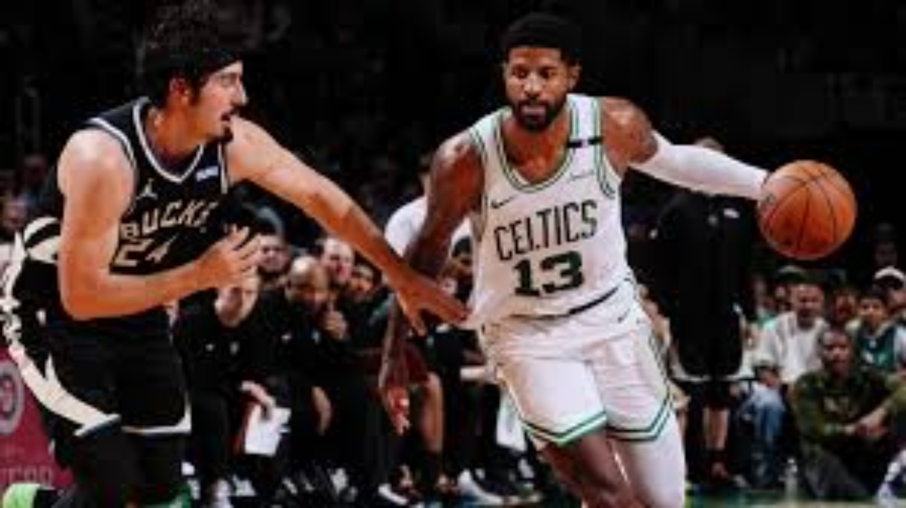
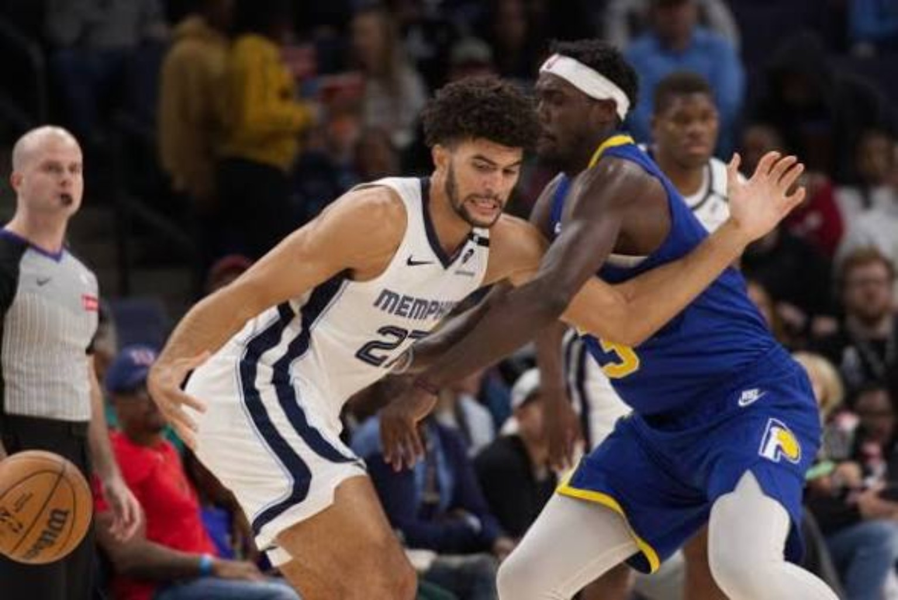
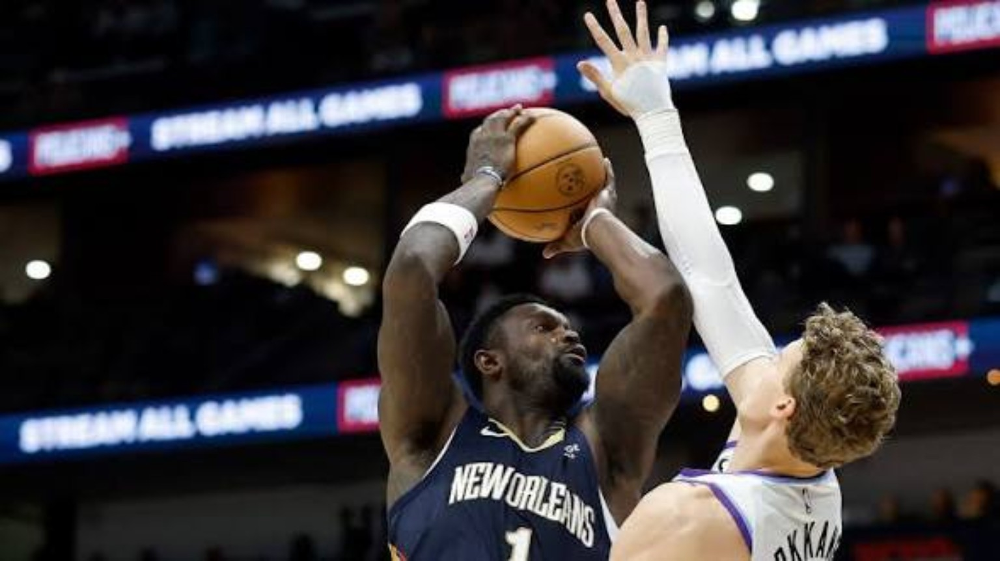

Jaylen Brown's 30 points and seven rebounds gave Philadelphia a wing scorer who could meet Detroit's physicality without surrendering shot creation. Joel Embiid's 26 points and 15 boards changed the interior equation in a rematch of the Sixers' only previous loss; he had missed that October meeting. Tyrese Maxey added 19 points and seven assists, while LeBron James supplied an almost triple-double with 13 points, 10 rebounds and eight assists.
Detroit wasn't short on resistance. Duncan Robinson hit seven threes on his way to 27 points, and Cade Cunningham paired 26 with 11 assists. Ausar Thompson pulled down 17 rebounds. Yet Philadelphia had more ways to manufacture offense, especially when a possession stalled. That's a playoff-relevant distinction: the Sixers can win with size, perimeter scoring and playmaking rather than asking one star to solve every defensive coverage.
THE TURNING POINT
Philadelphia sustained scoring from Embiid and Brown against a Detroit team that had beaten it earlier.
4DK OUTLOOK
Philadelphia avenges its October loss and strengthens its early claim near the top of the East. Detroit's creation and rebounding remain real, but the Pistons need more consistent defensive answers when multiple opponents are capable of attacking the same matchup.
Atlanta didn't win this one by accident or by living off difficult midrange shots. The Hawks made 19 threes, with Nickeil Alexander-Walker connecting on six and finishing with 26 points. Seven Hawks hit at least one from deep, a distribution that made Washington pay for every late rotation. Onyeka Okongwu's 14 points and 16 rebounds helped secure the possessions behind that perimeter barrage.
The other story was Trae Young seeing his former team from the opposite side. He scored 18 for Washington, while Anthony Davis posted 26 and 10 and Kyshawn George added 25. Washington had recognizable individual production but couldn't match Atlanta's volume of clean perimeter looks. The Hawks' spacing forced the Wizards to choose between helping inside and conceding catch-and-shoot opportunities.
THE TURNING POINT
Atlanta’s 19 made threes stretched Washington beyond its defensive coverage.
4DK OUTLOOK
Alexander-Walker's emergence as a high-volume offensive threat is no longer a side note. Atlanta has a credible formula when the ball moves and the floor is spaced; Washington needs tighter collective closeouts to avoid making every defensive possession a numbers game.
GAME 03 / 14 · 4DK BREAKDOWN
BOSTON FINDS ITS ANSWER
Celtics 109 · Bucks 102
BOX-SCORE SPOTLIGHTPaul George — 25 PTS · Derrick White — 24 PTS · Tyler Herro — 25 PTS

Boston nearly let a comfortable game slip away. Milwaukee erased a 22-point second-half deficit and tied it at 97 with just over four minutes remaining. That's the moment the Celtics' composure mattered: they answered with seven straight points and never let the Bucks get closer than five. Paul George scored 25, Derrick White added 24, and Boston found the late-game execution that separates a narrow win from an ugly collapse.
Milwaukee got 25 from Tyler Herro and 18 from Jaime Jaquez, but the comeback cost energy and didn't produce a closing punch. For Boston, the lesson is two-sided. Their offense still has enough shot-making and structure to finish under pressure, yet the blown cushion shows how quickly a game can turn when defensive concentration fades.
THE TURNING POINT
Boston scored seven unanswered after Milwaukee tied the game at 97.
4DK OUTLOOK
Boston gets the win and the closing-time reps; Milwaukee takes a fourth straight loss. The Celtics should be encouraged by their late response, not satisfied with how they arrived there.
Brooklyn needed a home win and finally delivered one, turning a competitive matchup into a fourth-quarter separation. Michael Porter Jr. produced 26 points and 10 rebounds, Julius Randle added 22, and rookie Mikel Brown Jr. scored a season-high 18. The Nets shot better than 50 percent overall and made 14 threes, enough efficiency to keep Charlotte chasing.
Naz Reid gave the Hornets 28 points and nine rebounds, but the supporting offense couldn't keep pace once Brooklyn tightened the finish. Charlotte also saw Kon Knueppel's season debut cut short by renewed soreness in the leg that had kept him out. For a team trying to establish continuity, another injury interruption compounds the challenge of finding dependable rotations.
THE TURNING POINT
Brooklyn pulled away in the fourth quarter behind its balanced scoring.
4DK OUTLOOK
Brooklyn's first home victory is a useful building block because it came through multiple scorers, not a single unsustainable hot hand. Charlotte's fifth straight defeat demands a response on both availability and defensive consistency.
Jalen Brunson ended the suspense early. He scored 22 of his 33 points in the first quarter and drove New York to an 84-52 halftime lead, tying the franchise's first-half scoring record. The Knicks didn't simply beat Chicago; they controlled the tempo, attacked before the Bulls could set their defense and made the game feel decided long before the final buzzer.
Karl-Anthony Towns finished with 17 points and 12 rebounds, giving New York a second pressure point around Brunson's shot creation. Chicago got 14 apiece from reserves Tre Jones and Jaylin Sellers, but there was no answer for the Knicks' opening barrage. The defending champions have now won four of five after an 0-3 start, and the offense finally looked like it knew exactly where its advantages were.
THE TURNING POINT
Brunson’s 22-point first quarter set up an 84-point Knicks first half.
4DK OUTLOOK
A 30-point win doesn't prove New York has solved every issue, but the offensive identity is clearer. Chicago's sixth consecutive loss is about more than cold shooting: the Bulls have to compete harder at the point of attack and stop allowing opponents to dictate the entire first half.
GAME 06 / 14 · 4DK BREAKDOWN
INDIANA STEALS THE MOMENT
Pacers 107 · Grizzlies 103

BOX-SCORE SPOTLIGHTAndrew Nembhard — 22 PTS · Pascal Siakam — 20 PTS · Cedric Coward and Ty Jerome — 23 PTS each
Indiana arrived in Memphis on a five-game skid and left with one of the slate's most revealing road wins. Andrew Nembhard scored 22, Pascal Siakam added 20 and Aaron Nesmith had 16. With the game still in reach late, Nesmith's corner three in the final minute provided the shot that protected the lead. That's exactly the kind of possession a struggling team has to execute to stop a losing streak.
Memphis began the season 6-0 but has now absorbed consecutive losses after its overtime defeat against New Orleans. Cedric Coward and Ty Jerome scored 23 apiece, while Zach Edey added 11 and 13 rebounds. The Grizzlies have enough talent to generate offense, but the last two games exposed how thin the margin becomes when opponents make the timely shot and deny the final momentum swing.
THE TURNING POINT
Nesmith’s corner three in the final minute sealed Indiana’s road breakthrough.
4DK OUTLOOK
Indiana's first win in Memphis after five straight losses there can reset its confidence. Memphis remains dangerous, but a fast start is not the same as a finished product; late-game defensive execution is now the immediate test.
GAME 07 / 14 · 4DK BREAKDOWN
NEW ORLEANS SURVIVES EXTRA TIME
Pelicans 120 · Jazz 113 · OT
BOX-SCORE SPOTLIGHTZion Williamson — 23 PTS · Saddiq Bey — 22 PTS · Keyonte George — 39 PTS, 9 AST

New Orleans had to work overtime for its fourth straight win after opening the season 0-4. Zion Williamson scored 23, Derik Queen added 20 points and nine rebounds, and Dejounte Murray supplied 20 and eight boards. But the decisive extra-period production came from Saddiq Bey, who scored eight of his 22 points in overtime and gave the Pelicans the finishing offense they needed.
Utah's Keyonte George delivered a major individual performance: 39 points on 14-for-26 shooting, nine assists and four steals. It still wasn't enough to end the Jazz's slide. New Orleans' ability to draw pressure through Zion while getting timely secondary scoring made the difference when legs were heavy and possessions tightened.
THE TURNING POINT
Bey scored eight points in overtime to finally separate the Pelicans.
4DK OUTLOOK
The Pelicans have flipped an 0-4 start into a four-game winning streak, and their supporting cast deserves credit alongside Zion. Utah has now lost six straight; George's breakout won't matter in the standings until the Jazz turn strong individual nights into stops and wins.
Shai Gilgeous-Alexander didn't just post another big number. He scored 42, with 16 points in each of the final two quarters, and Oklahoma City beat Cleveland for the second time in three days. That second-half scoring profile matters: as the game narrowed, Shai continued getting to his spots and dictating the terms of each important possession.
Ajay Mitchell scored 23 and rookie Bennett Stirtz reached a career-high 16, a meaningful contribution for a Thunder group dealing with major absences. Cleveland countered with 27 from Donovan Mitchell, 19 points, nine rebounds and six assists from James Harden, and a 16-point, 10-rebound night from Evan Mobley. The Cavaliers have talent, but their answers were not enough to disrupt Shai's rhythm twice in the same week.
THE TURNING POINT
Shai poured in 16 in each of the final two quarters.
4DK OUTLOOK
The Thunder's sweep says as much about their structure and depth as it does about their superstar. Cleveland now has a useful measuring stick: playoff-level opponents won't let one adjustment carry over automatically from one meeting to the next.
Minnesota walked into Houston without Anthony Edwards and still handed the Rockets a ten-point loss. LaMelo Ball scored 20 with six assists, Ayo Dosunmu delivered 21 and six, and Jonathan Kuminga contributed 16 points, eight rebounds and five assists. Kuminga's late pair of threes and second-chance finish were especially important in a game that refused to settle down.
The matchup featured 15 ties and 26 lead changes, so this wasn't a wire-to-wire ambush. Houston got 21 from Kevin Durant and a 17-point, 12-rebound, 10-assist triple-double from Alperen Sengun, but committed 22 turnovers. Minnesota's pressure turned a talented Rockets offense into a series of interrupted possessions, then its late execution finally broke the deadlock.
THE TURNING POINT
Kuminga’s late threes and second-chance finish settled a game with 26 lead changes.
4DK OUTLOOK
This is a statement win for Minnesota's depth and a reminder that Houston's ceiling depends on ball security as much as star power. The Rockets can score against anyone; they cannot keep giving away 22 possessions against credible Western Conference opponents.
Nikola Jokić made the first three quarters count and didn't need the fourth. He finished with 32 points, 11 assists and 10 rebounds, his third triple-double of the season, as Denver overwhelmed Toronto after halftime. The Nuggets outscored the Raptors 41-15 in the third quarter and 64-42 across the entire second half. That is the kind of sustained run that turns a competitive night into a rout.
Rookie Bryce Hopkins scored a career-high 18, giving Denver valuable support beyond its centerpiece. Toronto got 22 from RJ Barrett and 17 from Scottie Barnes, but couldn't slow the Nuggets' passing and interior control once Jokić began orchestrating every possession. His scoring forces the first defensive reaction; his vision punishes the second.
THE TURNING POINT
Denver’s 41-15 third quarter broke Toronto’s resistance.
4DK OUTLOOK
Denver's best version still begins with Jokić making the defense wrong no matter what it chooses. Toronto's third loss in four games underscores how quickly a shaky defensive quarter can erase an otherwise respectable effort.
Portland keeps turning road games into opportunities rather than obstacles. Damian Lillard tied his season high with 25 points, Deni Avdija posted 21 points and 12 assists, and Donovan Clingan delivered 24 points with 11 rebounds. The Trail Blazers scored 132 and moved to 5-0 away from home, with a 6-1 overall start that is their best since 1999-2000.
Phoenix had 33 from Devin Booker and 22 from Jalen Green, but Booker fouled out for the second consecutive game. Portland's advantage wasn't just hot shooting: its attack came from multiple positions, with Avdija creating and Clingan providing an interior target. That variety made it difficult for the Suns to load up on Lillard without opening another problem.
THE TURNING POINT
Portland’s multiple creators and Clingan’s interior production kept the Suns chasing.
4DK OUTLOOK
Portland's early rise deserves serious Western Conference attention, especially given its road form. Phoenix's fourth straight loss puts the focus on defense, discipline and finding ways to finish games without relying on Booker to solve every possession.
Victor Wembanyama authored the night's defining performance: 52 points, 24 rebounds and eight blocks in a 112-111 escape over Dallas. San Antonio led by 19 early in the third quarter, but the Mavericks refused to fold. P.J. Washington's three gave Dallas a 103-100 lead midway through the fourth, and Naji Marshall later tied it at 111. Wembanyama's free throw with 24.2 seconds left became the winning point.
Dallas still had a chance. Kyrie Irving, who scored 29, missed a contested turnaround in the lane in the closing seconds. Marshall finished with 22, Washington had 21 and 10 rebounds, and Cooper Flagg recorded 19 and 10. Yet Wembanyama's impact stretched beyond the box score: he changed shot selection at the rim while carrying an extraordinary offensive load. His first-half production alone reached a statistical threshold not seen in 30 seasons.
THE TURNING POINT
Wembanyama hit the winning free throw, then Irving missed Dallas’ final chance.
4DK OUTLOOK
This is our Player of the Night, and it isn't close. The Spurs' sixth consecutive victory came with a warning about protecting big leads, but Wembanyama's two-way ceiling made this a genuine early-season landmark. Dallas showed real resilience; San Antonio had the player who could finish the argument.
Luka Dončić's opening stretch keeps getting louder. He scored 40 points against Sacramento, his third consecutive 40-point outing and fifth of the season, while leading the Lakers with nine rebounds and seven assists. Austin Reaves supplied 21, and Walker Kessler added 15 points, eight boards, four blocks and three steals. Los Angeles had both the primary creator and the defensive support to keep control.
Sacramento's rookie Darius Acuff Jr. posted 22 points and 12 assists, but shot 8-for-24. Domantas Sabonis added 16 points and 17 rebounds. Those contributions kept the Kings competitive in stretches, yet the Lakers could rely on Luka to generate efficient offense whenever the game threatened to swing. His blend of scoring volume and playmaking is forcing opponents to defend the entire possession, not just the first action.
THE TURNING POINT
Luka’s relentless scoring gave the Lakers a reliable answer to every Sacramento push.
4DK OUTLOOK
The Lakers have a superstar operating at MVP-level offensive volume and enough complementary production to capitalize. Sacramento, fresh off its first win, still needs better shot quality and a more consistent defensive foundation.
Miami's comeback was the most dramatic finish outside San Antonio. The Heat trailed by 17 in the third quarter, pushed the Clippers to overtime and won 117-116 when Klay Thompson buried a three with one second left. Bam Adebayo powered the comeback with 35 points and 10 rebounds, while Thompson finished with 30. Giannis Antetokounmpo added 27 points and 14 boards, giving Miami multiple sources of pressure as the deficit disappeared.
Darius Garland scored 26 for the Clippers, including all nine of their overtime points, and Rui Hachimura added 21 and nine rebounds. That was enough to keep Los Angeles alive, but not enough to protect the final possession. Miami's 0-4 start is beginning to feel distant after three wins in four games; the Clippers' sixth consecutive defeat is moving in the opposite direction.
THE TURNING POINT
Thompson’s overtime three with one second left completed Miami’s comeback.
4DK OUTLOOK
The turning point was Miami's refusal to let a 17-point second-half hole become an excuse, and the final punctuation was Thompson's late three. This is the kind of resilience that can reshape a season's early narrative; for the Clippers, the inability to close is now a pattern.